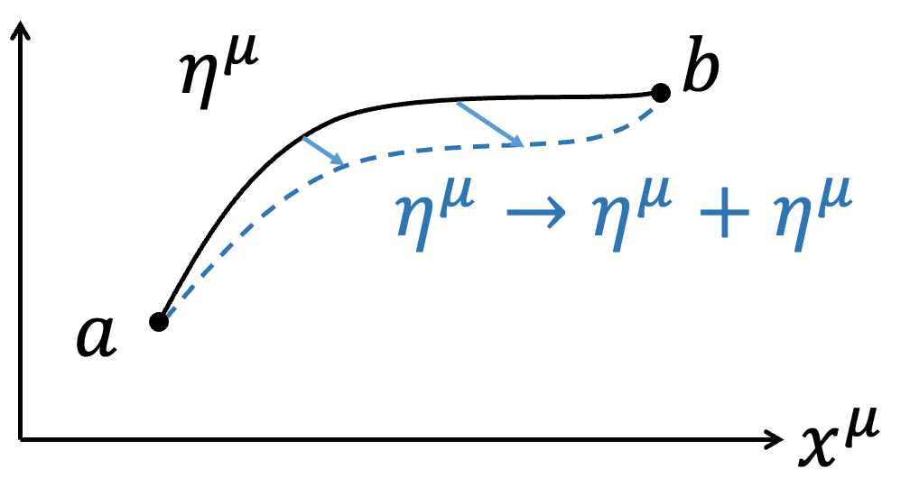

Free Particle Action的變分
在相對論性下，描述Free particle我們會利用4-displacement
$$\eta =\eta ^\mu \hat{e} _\mu =(\tau ,\overrightarrow{0} )_{porper}=(t,\overrightarrow{\eta})$$
來描述粒子的軌跡，其中\(\tau\) 是particle的proper time。這邊採用\(\eta ^\mu\) 與\(x^\mu\) 區分軌跡與時空（因應後續諾特定理討論，需嚴謹區分軌跡和時空，軌跡是物理量，時空是座標，是不同的概念）；描述粒子速度利用4-Velocity \(U=U^\mu \hat{e} _\mu =(\gamma c,\gamma \overrightarrow{v} )={d\eta ^\mu \over d\tau} \hat{e} _\mu\) ，其中\(\tau\) 是particle的proper time。更進一步說\(U^\mu =U^\mu (x^\nu )\)，速度\(U^\mu\) 會隨在時空的不同座標\(x^\nu\) 發生改變。在這邊的想法是，一個Free particle從時空中a跑到b，我們針對不同路徑\(\eta ^\mu\) 下的Action \(S_P\)去算極值，即對\(x^\mu\) 作變分

$$\eta ^\mu \to \eta ^\mu +\delta \eta ^\mu $$
$$\delta \eta ^\mu (a)=\delta \eta ^\mu (b)=0$$
Free particle的Action \(S_P\)為
$$S_P=\int _a^b -mc^2 d\tau $$
經過變分
$$\delta S_P=\delta \int _a^b -mc^2 d\tau =-mc^2 \int _a^b \delta d\tau $$
看起來\(d\tau \)好像與\(\eta ^\mu \to \eta ^\mu +\delta \eta ^\mu\) 變分無關，不過回憶一件事情
$$∵c^2 d\tau ^2=d\eta ^\mu d\eta _\mu $$
$$∴cd\tau =\sqrt{d\eta ^\mu d\eta _\mu}$$
所以
$$\delta S_P=-mc\int _a^b \delta \sqrt{d\eta ^\mu d\eta _\mu}$$
$$=-mc\int _a^b {1\over 2} {\color{red}{\delta d\eta ^\mu \cdot d\eta _\mu +d\eta ^\mu \cdot \delta d\eta _\mu} \over \sqrt{d\eta ^\mu d\eta _\mu}} $$
|
進階：Thm.4:
對Scalar變分與上下標無關
回憶度規張量Metric Tensor \(g_{\mu \nu}\) ：
$$g_{\mu \nu} =\hat{e} _\mu \cdot \hat{e} _\nu $$
$$g_{\mu \nu} =g_\nu \mu $$
$$g^{\mu \nu} \equiv (g_{\mu \nu} )^{-1}$$
\(g^{\mu \nu} g_{\nu \omega} = \delta ^\mu _\omega \)（Delta funcion，暫時不要跟變分\(\delta\) 搞混）。
度規張量\(g_{\mu \nu}\) 是時空的內稟性質(Intrinsic Property)，與\(x^\mu\) 無關(暫時只考慮狹義相對論，廣義相對論就會有影響)，意思是對\(x^\mu\) 變分與度規\(g_{\mu \nu}\) 無關。度規張量可以用作上下標轉換（Index lowering or raising）
$$x^\mu =g^{\mu \nu} x_\nu $$
$$x_\mu =g_{\mu \nu} x^\nu $$
因為對\(x^\mu\) 變分與度規\(g_{\mu \nu}\) 無關，所以
$$\delta x^\mu =g^{\mu \nu} \delta x_\nu$$
$$\delta x_\mu =g_{\mu \nu} \delta x^\nu $$
對一個Scalar作變分，例如\(x^\mu y_\mu \)是一個Scalar \(x^\mu y_\mu =x_\mu y^\mu \)
$$\delta (x^\mu y_\mu )=\delta x^\mu \cdot y_\mu +x^\mu \cdot \delta y_\mu $$
$$=g^{\mu \nu} \delta x_\nu \cdot g_{\mu \omega} y^\omega +g^{\mu \nu} x_\nu \cdot g_{\mu \omega} \delta y^\omega $$
$$=g^{\mu \nu} g_{\mu \omega} (\delta x_\nu \cdot y^\omega +x_\nu \cdot \delta y^\omega )=g^{\color{red}{\nu \mu}} g_{\mu \omega} \delta (x_\nu y^\omega )$$
$$= \delta ^\nu _\omega \delta (x_\nu y^\omega )=\delta (x_\omega y^\omega )=\delta (x_\mu y^\mu )$$
同理
$$x^\mu \delta y_\mu =x_\mu \delta y^\mu $$
所以
$$\color{red}{\delta dx^\mu \cdot dx_\mu +dx^\mu \cdot \delta dx_\mu} $$
$$=\delta dx^\mu \cdot dx_\mu +dx_\mu \cdot \delta dx^\mu $$
$$=2\delta dx^\mu \cdot dx_\mu $$
|
$$\delta S_P=-mc\int _a^b {1\over 2} {2\delta d\eta ^\mu\cdot d\eta _\mu \over \sqrt{d\eta ^\mu d\eta _\mu} } $$
$$= -mc\int _a^b {\delta d\eta ^\mu \cdot d\eta _\mu \over cd\tau}$$
$$ =-m\int _a^b \delta d\eta ^\mu \cdot U_\mu $$
利用Thm.1的方法，我們將\(\delta dx^\mu \)對調成\(d\delta x^\mu\) ，並作分部積分
$$\delta S_P=-m\int _a^b U_\mu d\delta \eta ^\mu $$
$$=\color{red}{ -\left[ U_\mu \delta \eta ^\mu \right]\Big| _a^b}+m\int _a^b dU_\mu \delta \eta ^\mu$$
邊界項因為變分邊界\(\delta \eta ^\mu (a)=\delta \eta ^\mu (b)=0\)，後面那一項利用Thm.3同乘同除\(d\tau\) 不影響變分
$$\delta S_P=m\int _a^b dU_\mu \delta \eta ^\mu $$
$$ =\int _a^b {m (dU_\mu )\over d\tau} \delta \eta ^\mu d\tau $$
所以對Free particle而言，\(\delta S_P=0\)使得
\(m {dU_\mu \over d\tau} =0\)
觀察\(\mu =1\sim 3\)
$$m {d\overrightarrow{v}\over d\tau} =0$$
Free particle沒有加速度，保持等速運動。
 王培儒
王培儒{kind=link}